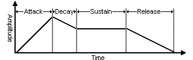

Java Sound. Eine Einführung toc
 |
|
Glossary
|
|
|
The world of electronic music and audio has a long list of acronyms and
phrases that can be difficult to figure out. This glossary is a
great place to check when you come across a term you don't
understand on The Sonic Spot or in any other electronic music and
audio related material.
If you are looking for a term that doesn't appear in the
glossary, please submit the new term and the definition will be
added and e-mailed to you.
ADSR- see Envelope.
Aliasing - a type of distortion that occurs when digitally
recording high frequencies with a low sample rate. A visual analogy
can be found in video, when a car's wheels appear to slowly spin
backwards while the car is quickly moving forward. Similarly when
you try to record a frequency greater than one half of the sampling
rate (Nyquist Frequency), instead of hearing a high pitch you may
hear a low frequency rumble. An anti-aliasing filter can be used to
remove high-frequencies before recording. However, once a sound has
been recorded, aliasing distortion is impossible to remove without
also removing other frequencies from the sound.
Arpeggiator - a device that sequentially plays a pattern
of notes over a range of the keyboard. The speed of the arpeggiation
and pattern of notes are variable depending on the tempo and
specified/pressed notes.
Attack - the initial period of a typical envelope during which a sound's attribute
(such as volume) increases from 0 (silence) to it's maximum amount.
The length of the attack determines how "soft" or "harsh" a sound
is. For example, most drum or percussion sounds have a short
amplitude attack time and thus have a sudden "harsh" start. A string
sound usually has a long amplitude attack and thus has a "soft"
start and eases in.
Bandpass Filter - a type of filter used to eliminate high- and
low-range frequencies around a specific frequency, resulting in more
distinctive sound.
Bit/Bit-Depth - often used to describe the resolution or
quality of each sample in a digital audio stream. It is the number
of bits (0's and 1's) used to describe the amplitude or volume of an
audio signal at a specific point in time. The higher the number, the
more precisely the original or intended audio signal can be
(re)produced. See Digital
Audio Basics for a more detailed explination.
BPF - see Bandpass Filter.
CDDB - A huge online database of audio CD information
including album, artist, song names and more. Information is added
and retreived by users of CDDB enabled software, allowing the
database to continually grow. Building on the original database,
CDDB2 enables expanded album and track-by-track credits,
genres, web-links, segments and more. You can learn more about CDDB
and CDDB2 including programming information at
http://www.cddb.com/.
Chorus - an audio effect used to "expand" or "thicken" a
sound by playing multiple versions of the input signal with slightly
different delays and changes in pitch simulating an ensemble of the
input sound.
Codec - stands for coder/decoder. Codecs are often used by
software to compress and decompress audio data. For example, most
Windows computers have an ADPCM codec which many software
applications use to read and write compressed audio data from ADPCM
compressed WAV files. You can view the codecs installed in Windows
by going to Control Panel > Multimedia > Devices Tab >
Audio Compression Codecs.
DAT - Digital Audio Tape. A tape-based digital audio
recording and playback system, developed by Sony, which use a
sampling rate of 48 kHz (slightly higher than CDs, which use 44.1
kHz).
Decay - the period of an envelope during which a sound's attribute
(such as volume) stabilizes after the attack has completed. When the sound
attribute reaches the end of it's decay, it has reached the sustain period.
Delay - an effect that is used to add depth or space to an
audio signal by repeating the input one or more times after a brief
pause of a few milliseconds to a few seconds. Delay is also often
referred to as echo.
DirectX Plug-In - a program that uses Microsoft's DirectX
technology to obtain digital audio samples which are then
manipulated by applying reverb, compression or some other type of
audio signal effect. The output signal may be rendered off-line or
generated in real-time while the plug-in's host program performs
playback. See Plug-In for more details.
DSP - Digital Signal Processing uses
mathmatics to operate on a digital signal (such as a digital audio
stream) to generate some type of altered output. DSP is used heavily
in software and hardware effects processing. DSP chips are found on
an increasing number of sound cards to provide extra audio
processing power and help relieve the computers CPU of this type of
work, much like a 3D graphics accelerator would for rendering 3D
graphics.
Echo - a very basic effect produced by repeating a sound
with a delay long enough to be heard as a separate event. It is
often just called delay and is usually used to add more depth
to an audio signal without the muddiness often introduced by reverb.
Envelope - used in sound synthesis to control the volume,
pan, pitch or other attribute of sound over a period of time. ADSR
envelopes are the most commonly used type of envelope. They are
divided into several segments, Attack, Decay, Sustain and Release. The attack segment is often
triggered by pressing a keyboard note. The envelope continues and
holds the sustain level until the keyboard note is released, which
causes the release segment to finish the envelope.

Equalizer (EQ) - a device used to cut and boost individual
frequencies of an audio signal using a number of filters. The name
"equalizer" comes from the original application of correcting
distorted audio signals to sound closer to the original source. Graphic and Parametric are different types of
equalizers used by audio equipment and software plug-ins.
File Format - the structure that defines how data is
organized in a software file used to store information about a
sample, musical score, etc. A standardized file format makes it
possible for different software programs to share the same
information. See the Music and
Audio File Formats Guide for more details, including information
about specific file formats.
Filter - a function that cuts off a specific frequency
band to change a sounds brightness, thickness and other qualities. A
few common filter types are Low-pass, High-pass and Bandpass.
Flanger - an audio effect created by varying a slight
delay between two identical audio signals that results in a sound
similar to a jet airplane taking off or landing.
Full-Duplex - the ability to send and receive data
simultaneously which, in digital audio terms, translates to being
able to play and record audio at the same time. Many sequencing and
multi-track recording programs use a sound card's full-duplex
capabilities to allow recording to a new track while playing back
previously recorded tracks for reference. Most modern sound cards
are full-duplex, but many of the older ones are only able to record
or play audio at different times. They are said to be "half-duplex".
Graphic Equalizer - a type of equalizer that provides control over a
fixed set of frequencies. Each filter provides linear cut/boost
control over a fixed frequency. The number of filters on graphic
equalizers range from three (low, mid, high) to well over eleven.
While graphic equalizers generally have more filters than parametric equalizers, they are less
flexible, in that the individual filter frequencies are not
adjustable.
Half-Duplex - the inability to send and receive data
simultaneously which, in digital audio terms, translates to the
inability to record and play audio at the same time. Many older
sound cards are half-duplex. Most modern sound cards are capable of
recording and playing audio simultaneously. This capability is
called "full-duplex".
High-pass Filter - a type of filter used to eliminate low-range
frequencies resulting in a crisper sound, good for creating
percussion sounds with distinctive high ranges.
HPF - see High-pass Filter.
LFO - see Low Frequency Oscillator.
Low Frequency Oscillator - used in sound synthesis to
modulate a sound attribute such as volume at an audibly slow rate.
Low-pass Filter - a type of filter used to eliminate high-range
frequencies resulting in a rounder sound.
LPF - see Low-pass Filter.
MIDI - Musical Instrument Digital
Interface provides a standardized method for MIDI devices
such as synthesizers, samplers, sound cards, etc. to communicate
musical events and data to each other. See the MIDI Guide for a
detailed explanation.
MIDI Interface - a hardware interface that is either
inserted into one of the computer's internal expansion slots or
plugged into a computer (serial/parallel) port. It allows the
computer to communicate with other MIDI instruments by adding one or
more MIDI input and output ports.
Mixer - a hardware or software device that combines
multiple audio signals into one destination signal. Mixers usually
provide control over the volume and/or stereo balance of each source
signal.
Modulation - the fast oscillation of one or more operators
or sound waves of a synthesized sound. Commonly used in FM synthesis
to add some complexity and texture to a sound. Many MIDI controllers
and keyboards provide a specific wheel or slider for controlling the
modulation of an instrument sound (often referred to as the
mod-wheel).
Monophonic - only one note of an instrument may be played
at a time. An instrument that can play many at once is said to be polyphonic. Monophonic instruments usually
cut-off the sound of previously played note with the start of new
one.
Monotimbral - only one instrument sound (timbre) may be played at a time. Older
synthesizers were often monotimbral before sequencers where
invented, which enables musicians to play multiple parts on the same
instrument. A monotimbral synthesizer may be able to play multiple
notes of the one instrument sound simultaneously.
Multitimbral - more than one instrument sound (timbre) may be played at the same time.
Most modern synthesisers, samplers and sound cards have this
capability. A musical device that is not multitimbral is said to be
monotimbral.
Oscillator - a synthesis module used to create a cyclical
waveform. These simple waveforms may then be passed through other
modules (LFOs, envelopes, etc.) to add some character. See
the Sound
Synthesis Guide for more details.
Parametric Equalizer - a type of equalizer that provides control over each
filter's frequency and the amount of cut or boost of each filter.
Typically, parametric equalizer's provide three to four filters that
work in parallel, each one filtering a different frequency of the
spectrum (i.e. low, mid, high). While parametric equalizers
generally have fewer filters than a graphic equalizer, they are more flexible
and provide finer control, due to the adjustability of the filtered
frequencies.
Patch - refers to an instrument sound, program or voice on
a synthesizer or sampler. This term comes from the roots of hardware
synthesis, where physical cables where used to connect and route
signals in a matrix to create a unique sound (same concept as phone
operators "patching" a call through, back in the day).
Plug-In - a "client program" that is used to expand the
functionality of a "host program", such as a sequencer or digital
audio editor. The host provides the plug-in with some type of input
data such as digital audio samples, which is then processed to
generate new output, such as effected digital audio. A plug-in is
often run seamlessly from within a host program appearing to be part
of the standard interface. One plug-in can be used by multiple host
programs that share the same plug-in format. Two popular plug-in
formats used in computer music and audio are DirectX and VST digital audio plug-ins.
Polyphonic - more than one note of an instrument sound may
be played at the same time. Hardware and software synthesizers
usually range from 1 to 128 notes polyphony. The number specifies
exactly how many notes may be played at once before cutting-off
previously played notes. An instrument that can play only one is
said to be Monophonic.
Polytimbral - more than one instrument sound (timbre) may be played at the same time. Multitimbral is the more commonly used term
for this functionality.
Potentiometer (Pot) - a variable resistor (rotary or
linear) used to control volume, tone, or other function of an
electronic device.
Release - the final period of an envelope during which a sound's attribute
(such as volume) decreases from the sustain level to 0 (silence). The release
period is usually started upon releasing a keyboard's note. This
period of the envelope defines how a sound finishes off. A long
release time causes a sound's attribute to fade away slowly, while a
short release time causes it to drop out quickly.
Resample - to recalculate samples in a sound file at a different rate than the file was originally recorded.
If a sample is resampled at a lower rate, sample values are removed
from the sound file, decreasing its size, but also decreasing its
available frequency range and possibly introducing aliasing. Resampling to a higher sample
rate, often interpolates extra sample values into the sound file.
This increases the size of the sound file but may not increase the
quality (depends on the algorithm used).
Reverb - an effect that simulates natural reverberations
(sound reflections) that occur in different rooms and environments
to create an ambience or sense of spaciousness.
Rip - to extract or copy data from one format to another
more useful format. The most common example is found in the phrase
"CD Ripping" which means to copy audio tracks from an ordinary audio
CD and save them to hard disk as a WAV, MP3 or other audio file,
which can then be played, edited or written back to another CD.
Sample - a sound or short piece of audio stored digitally
in a computer, synthesizer or sampler. The word sample may refer to
either a single moment in a digital audio stream (the smallest piece
of data used to represent an audio signal at a given time) or a
complete sound or digital audio stream made up of a collection of
individual samples. For a more detailed explanation of samples, see
Digital
Audio Basics.
Sampler - a hardware device or software application that
uses samples as it's main method of generating
it's audio output. Samplers often use a number of samples together
to create realistic sounding reproductions of real sounds and
musical instruments. For more details on this technique, see
Wavetable
Synthesis.
Sample Rate - the resolution of digital audio that
determines it's sound quality. When audio is digitally recorded
(digitized), it must be converted into a series of samples which can be stored in memory or on
disk. The sample rate defines how many samples are recorded per
second of audio input and is measured in Hz (Hertz, cycles per
second) and kHz (Kilohertz, thousand cycles per second). Click the
examples below to hear the difference between a few commonly used
sample rates.
Sequencer- a hardware device, software application
or module used to arrange (ie. sequence) timed events into some order.
In digital audio and music, sequencers are used to record and
arrange MIDI and/or audio events into patterns and musical
compositions.
Signal-to-Noise Ratio - "Signal" refers to the useful or
"pure" information found in a an audio stream or other medium, and
"noise" to anything else. The ratio of these is usually expressed
logarithmically, in decibels. Signal-to-Noise Ratio is sometimes
abbreviated as SNR, s/n ratio and s:n ratio. A high SNR translates
to a "cleaner" signal.
Sound Card - a hardware interface that is either built
into a computer's motherboard or inserted into one of the computer's
internal expansion slots. Sound cards allow the computer to play
digital audio and/or musical instrument sounds. Many sound cards
also provide a MIDI interface.
Sustain - the period of an envelope during which a sound's attribute
(such as volume) holds at a constant level. The sustain period
starts at the end of the decay period and holds until the release period is started (usually by a
keyboard note release). Unlike the other periods of an envelope, the
sustain period does not have a slope because it must be capable of
holding indefinitely (as long as a keyboard note is pressed).
Syncopate - to shift the regular accent of a tone or beat
by beginning on an unaccented beat and continuing through the next
accented beat.
Timbre - the characteristics that differentiate one
instrument, voice or sound from another. It can be thought of as the
texture or characteristics that define a sound. Notes of the same
pitch and volume may have a different timbre. In electronic music,
timbre sometimes refers to a synthesizer voice or patch (see Multitimbral).
Time Variant Amplifier - alters the volume of an audio
signal over a period of time, often based on an envelope.
Time Variant Filter - alters the brightness, thickness and
other aspects of an audio signal over a period of time using
filters, often based on an envelope.
Time Variant Pitch - alters the pitch of an audio signal
over a period of time, often based on an envelope.
TVA - see Time Variant Amplifier.
TVF - see Time Variant Filter.
VCA - see Voltage-Controlled Amplifier.
VCD - a Video CD is a compact disc which
stores video and audio compressed using MPEG-1 file format
technology. Movies are generally compressed to around 352x240 pixels
(NTSC) resulting in about 1 GB of data, which spans over two CDs.
While they aren't common in the USA, VCDs are more common in other
countries where many popular electronics companies sell dedicated
VCD players. DVD technology surpasses the quality of VCD technology,
mostly due to the increased storage capacity of DVD media.
VCF - see Voltage-Controlled Filter.
VCO - see Voltage-Controlled Oscillator.
Vocoder - an audio effect that produces "robotic" sounding
results when processing vocal input. It uses an algorithm called ring
modulation to produce the effect. Examples can be found in some
disco and modern music, such as the Beastie Boys' "Intergalactic".
Voltage-Controlled Amplifier- an audio signal amplifier
whose output is controlled by voltage (instead of a potentiometer). VCAs can be used to alter
the amplitude of a signal output from a Voltage-Controlled Oscillator.
Voltage-Controlled Filter - a filter whose cutoff
frequency and resonant frequency is adjusted using a control
voltage. VCFs are used to filter the audio signals generated by VCOs
in an analog synthesizer in order to create more interesting and
textured sounds.
Voltage-Controlled Oscillator - an analog circuit that
generates a electrical waveform, such as a Sine, Saw or Square wave
where the pitch is determined by a control voltage. VCOs are used by
older analog synthesizers to generate the base sounds which are then
altered by Voltage-Controlled Amplifiers and Voltage-Controlled Filters.
VST Plug-In - a program that uses Steinberg's VST
technology to obtain digital audio samples which are then
manipulated by applying reverb, compression or some other type of
audio signal effect. The output signal may be rendered off-line or
generated in real-time while the plug-in's host program performs
playback. See Plug-In for more details.
WMDM - Windows Media Device
Manager is a Microsoft software component that enables
Windows applications to share and transfer files to and from non-PC
devices, such as portable MP3 players, in a standardized way. The
use of a common software component enables greater software and
hardware compatibility and support. |
|
|
|
|
|
|
|
|
|
A/D Analog/Digital.
ACIA Siehe UART.
Active Sensing MIDI-Funktion: in periodischen Abständen wird ein Kontrollsignal ausgesandt, im Falle des Ausbleibens wird dies vom System erkannt. Alle MIDI-Noten werden abgeschaltet.
ADC Analog Digital Converter. A/D-Wandler: Wandelt analoge Spannungen in digitale Daten um. Siehe auch Nyquist-Frequenz.
Additive Synthese Erzeugung von Klängen durch Addition mehrerer Sinusschwingungen.
Adresse Eine numerischer Ausdruck, der einen bestimmten Platz im Computerspeicher beschreibt
ADSR Abkürzung für: "Attack, Decay, Sustain, Release". Die vier Abschnitte einer Hüllkurve (Envelope) bzw. des Dynamikverlaufs, wie sie bei den meisten analogen Synthesizern benutzt wird.
AES "Audio Engineering Society". Eine Organisation, die seit 1948 den internationalen Dachverband in der Audio-Profession bildet. Unter anderen umfassen die Aktivitäten dieser Organisation die Abhaltung von Konferenzen und Konventionen, die Herausgabe und Veröffentlichung von Zeitschriften und Periodika, u.a.
Aftertouch Modulationsmöglichkeit durch Tastendruck. Es gibt zwei Kategorien des Aftertouchs: Aftertouch des gesamten MIDI-Kanals (Channel Pressure) und Aftertouch jeder einzelnen Note (polyphoner Aftertouch).
AI Abkürzung für "Artificial Intelligence": Künstliche Intelligenz.
Akustikkoppler Verbindungsmöglichkeit zwischen Computern und akustischen Geräten (z.B. Telephon) zur Datenübertragung.
Algorithmus Schema zur Lösung eines Problems, eine Berechnungsvorschrift bzw. -prozedur, u.ä. In der FM-Synthese stellt der Algorithmus das Verbindungsschema zwischen den Trägeroperatoren und den Modulatoren dar.
All Notes Off MIDI-Befehl, der sämtliche klingende Noten abschaltet.
Amplitude (Maximale) Auslenkung einer Schwingung. Bezeichnet die Intensität bzw. Lautstärke eines Signals oder Schallereignisses.
ANSI American National Standards Institute. Organisation, die damit betraut ist, Normen festzulegen bzw. zu definieren.
ARP 1970 von Alan R. Pearlman gegründete Firma, die maßgeblich an der Entwicklung von modernen Synthesizer beteiligt war.
ASCII American Standard Code for Information Interchange. Eine Kodierungsnorm von 256 alphanumerischer Zeichen und Sonderzeichen zur Übertragung von Daten.
ATF Abkürzung für "Automatic Track Follower": System zur automatischen Spurnachführung.
Attack (-time) Einschwingphase. jene Zeit, die von einem Signal benötigt wird, um von Null auf die maximale Amplitude zu gelangen. Siehe auch ADSR.
B
Bandbreite Die Differenz zwischen höchster und niedrigster Frequenz, die in einem Audiogerät verarbeitet wird.
Bandpaß-Filter Ein Filter, welches Frequenzanteile unter- und oberhalb einer definierten Cutoff-Frequenz (=Eckfrequenz) beschneidet.
Bar Takt, Taktstrich.
Baud-Rate Maßeinheit für Übertragungsgeschwindigkeiten bei seriellen oder parallelen Schnittstellen: 1 Baud = 1 Bit/Sekunde (z.B. 31.250 Bauds für das MIDI-Interface).
Binär Zahlendarstellung auf der Basis 2. Binäre Zahlen bestehen ausschließlich aus Nullen und Einsen.
Binaural Vorgang des Hörens mit beiden Ohren. Siehe auch Monaural.
Bit Abkürzung für Binary Digit. Kleinste Informationseinheit in der Digitaltechnik. 8 Bits = 1 Byte.
BPM Abkürzung für "Beats Per Minute": Zeitmaß in Viertelnoten pro Minute.
BPS Abkürzung für "Beats Per Second": Zeitmaß in Impulsen für die Datenübertragungsrate pro Sekunde.
Breath Controller Blaswandler, elektronisches Mundstück für Synthesizer.
Buffer "Puffer". Zwischenspeicher: Spezieller Speicherbereich, um zu transferierende Daten zwischenzuspeichern.
Byte Gruppierung aus acht binären Ziffern (1 Byte = 8 Bits). Der Wert eines Bytes hat einen Bereich von 0 bis 255 (256 Kombinationen).
C
CAL Abkürzung für "Cakewalk Application Language": Makro-Programmierung innerhalb des Sequenzers Cakewalk Professional zur Editierung mittels logischer Algorithmen.
Cartridge, Card Hardware-Speichereinschub, mit dem Klänge, Samples, Sequenzersongs etc. archiviert werden. Es gibt sowohl RAM- als auch ROM-Cartridges. Siehe auch Slot.
Cent Entspricht einem Hundertstel eines Halbtones. Logarithmische Transformation von Schwingungszahlen, durch die sich die Distanzen von Schwingungsverhältnissen als lineare Skala darstellen lassen.
Clock Systemtakt, Zeitimpuls. Ein Clock-Signal ist eine Folge von Taktimpulsen, die von einem Sequenzer zum anderen geschickt werden, um sicherzustellen, daß die Geräte synchron zusammenarbeiten.
Complex Tone Ein Ton, der sich aus mehr als einer Sinusschwingung zusammensetzt. (z.B.: Klang mit harmonischen Teiltonspektrum, Tongemisch mit nichtharmonischen Teiltonspektrum)
Compressor Wird verwendet, um die Dynamik eines Signals zu begrenzen.
Conductor Track Kontroll- und Tempospur eines Sequenzers.
Control Change MIDI-Kontrollfunktion für die Übertragung der Steuerelemente.
Controller Schalter bzw. Spielhilfe und Steuerfunktion, um Parameter im MIDI-System zu beeinflussen. Ein MIDI-Controller ist jedes Gerät, das MIDI-Signale aussendet und damit andere MIDI-Geräte steuern kann.
Contour Siehe EG.
Converter Wandler. Siehe ADC, DAC.
CPU Abkürzung für "Central Processing Unit": Zentraleinheit eines Computers.
CPS Abkürzung für "cycles per second": Siehe Hz, Hertz.
Cuelist Siehe Playlist.
Cuepoint Markante Punkte bzw. Ereignisse in der Zeitachse (Synchronisation u.ä.), die definiert werden können bzw. bei denen bestimmte Ereignisse stattfinden. Siehe auch Locator-Punkte.
Cutoff Frequenz Eckfrequenz eines Filters. Siehe auch Resonanz.
CV Abkürzung für "Control Voltage". Bei analogen Synthesizern verwendetes Steuersignal, bei dem der jeweiligen elektrischen Spannung eine bestimmte Tonhöhe zugeordnet ist (z.B. Gate/CV-Methode). Siehe auch MIDI to CV-Converter.
Cycle Mode Modus eines MIDI-Sequenzers, bei dem der Aufnahme- bzw. Wiedergabevorgang zwischen zwei bestimmten Cue-Punkten schleifenförmig abläuft.
D
D/A Digital/Analog.
DAC Digital Analog Converter: D/A-Wandler. Wandelt digitale Daten in analoge Spannungen um.
Daisy Chain Verkettung von mehreren MIDI-Geräten.
Dämpfung In der Akustik: Wert, der sich aus dem Verhältnis der reflektierten bzw. absorbierten Schallenergie errechnet.
DAT Digital Audio Tape: Digitales Kassetten Aufnahme- und Wiedergabegerät (R-DAT: Rotary Head-DAT, S-DAT: Stationary Head-DAT, ADAT: 8-Spurdigitalrecorder).
Datenbyte MIDI-Datenwort (Statusbyte), um die Werte einer Aktion zu präzisieren.
Datenfilter Funktion (z.B. bei MIDI-Sequenzern), die überflüssige (MIDI-) Daten digital ausfiltert.
DB Abkürzung für Dezibel. Logarithmische Maßeinheit, z.B. eines Spannungsverhältnisses.
DCA Digital Controlled Amplifier: Digital gesteuerter Verstärker.
DCF Digital Controlled Filter. Digital gesteuertes Filter.
DCO Digital Controlled Oscillator. Digital gesteuerter Oszillator.
Decay (-time) Ausklingzeit: Jener Zeitabschnitt im Dynamikverlauf eines Synthesizers, der zwischen der Einschwingphase (Attack) und der Ausklingphase (Sustain) liegt. Siehe auch ADSR.
Delay Verzögerung. Ein Verzögerungsglied in der Signalverarbeitung (DD=Digital Delay).
DIF Abkürzung für "Digital Interface": Digitale Schnittstelle.
DIN-Anschluß Abkürzung für "Deutsche Industrie-Norm". DIN-Stecker: Standardanschluß in Form einer Stecker/Buchse-Verbindung, der in MIDI-Systemen verwendet wird.
DNA-Grooves Rhythmusmuster der Firma WC Music Research (Kanada) die im MIDI-Sequenzer "Cubase" verschiedene Quantisierungen ermöglichen.
DSP Digital Signal Processor. Spezieller integrierter Halbleiterbaustein, um Audiosignale zu bearbeiten.
Dump Blockweise, digitale Übertragung von Audio- und/oder MIDI-Daten zwischen MIDI-Geräten (z.B. Sample Dump Standard). Siehe auch MIDI-Dump.
Dynamik Verhältnis zwischen kleinstem und größtem Wert einer elektroakustischen Größe, meist in DB angegeben. Siehe DB.
Dynamikprozessor Gerät zur Bearbeitung des Lautstärkepegels eines Audiosignals.
E
EBU Abkürzung für European Broadcasting Union. Vereinigung europäischer Sendeanstalten, zur Standardisierung von Fernseh-, Rundfunk-, Synchronisierungs- und Audionormen.
Echtzeit-Sequenzer Ein Sequenzer, bei dem die MIDI-Noten durch Spielen eines MIDI-Keyboards oder eines anderen MIDI-Eingabegeräts eingegeben werden. Siehe auch Sequenzer.
Editor Computerprogramm oder Benutzermodus einer Software zur Bearbeitung oder Verwaltung von (MIDI-)Daten, Klängen usw.
EG Envelope Generator: Hüllkurvengenerator. Bearbeitet den zeitlichen Verlauf der Amplitude oder der Frequenz eines Signals.
EIAJ "Electronic Industries Association of Japan": hat u.a. die Aufgabe, Normen zu definieren.
Envelope Hüllkurve (Zeitverlauf, "contour").
Environment Koppelung von analogen und digitalen Geräten.
EOX Abkürzung für: End of Exclusive. MIDI-Nachricht, die eine SysEx-Nachricht beendet.
Equalizer (EQ) Gerät, welches ein oder mehrere Frequenzbänder verstärkt oder abschwächt.
Event Bezeichnung für ein (MIDI-)Ereignis in einem MIDI-Sequenzer (z.B. ein Note Event liefert Informationen über den Beginn, das Ende sowie die Anschlagstärke einer Note).
Expander Bezeichnung für einen (MIDI-kompatiblen) Klangerzeuger ohne Tastatur.
F
Fa Rhythmusanalyse-Computerprogramm für Apple Macintosh II Computer, geschrieben in der Sprache "Lisp" (CMJ: ROSENTHAL 1992).
Fade-In Kontinuierliches Einblenden eines akustischen Signals.
Fade-Out Kontinuierliches Ausblenden eines akustischen Signals.
Fairlight Digitale Synthesizer-Workstation, 1979 in Australien von P. Vogel und K. Ryrie entwickelt.
FFT Abkürzung für "Fast Fourier Transformation": Analyseverfahren zur Berechnung einer Fourierdarstellung aus einem Schallereignis, nach dem Fouriergesetz, welches besagt, daß sich jede komplexe, periodische Funktion aus der Summe einer spezifischen Anzahl von harmonischen Sinus-schwingungen zusammensetzt.
Filter Gerät oder Gerätekomponente, zur Verstärkung oder Abschwächung von bestimmten Frequenzen.
FM Abkürzung für "Frequenzmodulation".
FM-Synthese Erzeugung von Klängen durch Frequenzmodulation mehrerer Schwingungen.
Formant Verstärkungsgebiet von Teilschwingungen innerhalb des Frequenzspektrums eines Klanges.
Frequenz Anzahl der Schwingungen pro Sekunde (Hz).
Frequenz Modulation Siehe FM-Synthese.
FSK Abkürzung für "Frequency Shift Keying": Ein Signal, das zwischen zwei Frequenzen wechselt und für Kodierung und Synchronisation benutzt werden kann.
FX Übliche Abkürzung für Effekt bzw. Effektgerät.
G
Gate Elektrisches Signal bei analogen Synthesizern, um den Tongeneratoren Informationen über das Anschlagen (Note On) und Loslassen (Note Off) der Tasten zu übermitteln. Siehe auch Gate/CV-Methode (PENFOLD 1991: 8-18).
GEM Abkürzung für "Graphik Environment Manager". Graphische Benutzeroberfläche, wie sie bei gängigen Computerprogrammen verwendet wird. Siehe auch Menüleiste.
GM Abkürzung für "General MIDI": Standardisierung von Klängen und Drum-Maps bezüglich deren Speicherplatzzuordnung bei Produkten verschiedener Hersteller. Siehe auch Anhang: Tabelle 3.
GPI Abkürzung für "General Purpose Interface": Schnittstelle für allgemeine Anwendungen.
Grid Editor Raster Editor zur Bearbeitung von MIDI-Events.
Groove Quantize Quantisierung nach vorgegebenen bzw. einstellbaren rhythmischen Abweichungen.
Groove-Template Rhythmusschablone an Hand der eine Quantisierung nach Modell vorgenommen werden kann.
GS Abkürzung für "General Standard": Ähnlich dem Konzept von General MIDI wurde die Klangzuordnung von Roland-Klangerzeugern durch das GS-Format 1991 festgelegt.
H
Hallgerät Apparat zur künstlichen, analogen oder digitalen Nachhallerzeugung.
Handshake Wörtlich: Handschlag. Verfahren in der Computertechnologie, welches in der Datenübertragung auf einem Frage-Antwort-Dialog basiert, um die Kommunikation zwischen zwei Geräten zu ermöglichen und gleichzeitig zu überprüfen.
Hardware Elektronische Komponenten und Bauteile eines Computers oder eines MIDI-Systems (z.B. Bildschirm, Steckkarte, Synthesizer, Tastatur etc.)
Hardwaresequenzer Transportabler Sequenzer als separates Gerät oder eingebaut in ein Keyboard. Siehe auch Sequenzer.
Header Information, die in der Überschrift (im Kopf) steht. z.B. eine Art Ausweis eines Papiers, der die Daten, die folgen, beschreibt.
Hertz (Hz) Frequenzeinheit: Anzahl der Schwingungen pro Sekunde, benannt nach Heinrich Rudolf Hertz (1857-94).
Hexadezimal Zahlensystem, das auf der Zahl 16 basiert. In der MIDI-Synthese häufig zur Darstellung von MIDI-Codes verwendet.
HPF Abkürzung für "High Pass Filter": Beschneidet alle Frequenzanteile, die unter seiner Grenzfrequenz (=Eckfrequenz) liegen.
Hüllkurve Envelope. Kurvenverlauf in der Zeitachse, zur Beeinflussung von Klangparametern.
I
IEC Abkürzung für "International Electronical Commission": Organisation mit der Aufgabe, bestimmte Normen zu definieren.
Icon Symbol zur graphischen Benützerführung am Computerbildschirm. Siehe auch WIMP.
IMA Abkürzung für "International MIDI Association", gegründet 1982.
Implementation "Implementation Chart": Übersichtsplan, betrifft den MIDI-Datentransfer und wird üblicherweise vom Gerätehersteller als eine Art von Gebrauchsanweisung bzw. Datenblatt mitgeliefert.
Interface Hardware- und/oder Software-Vorrichtung, mit deren Hilfe der Austausch von Informationen zwischen zwei Systemen stattfinden kann (BRAUT 1993: 35) (z.B. MIDI-Interface, RS 232, u.ä.).
Interpolation Methode, um künstlich Werte zu erzeugen. In der Computermusik meistens beim Oversampling und Resampling verwendet.
IRCAM Institut de Recherche et Coordination Acoustique/Musique. 1977 in Paris gegründetes Forschungsinstitut für Computermusik, elektronische Musik, Elektroakustik und Musikpädagogik.
ISDN Abkürzung für "Integrated Services Digital Network": International standardisiertes, universelles Fernmeldenetz für verschiedenste telekommunikative Dienstleistungen, das sich durch hohe Datenübertragungsraten (64 Kbit/s) auszeichnet.
ISO Abkürzung für "International Standards Organization". Organisation mit der Aufgabe, bestimmte Normen zu definieren.
J
JASA Abkürzung für "The Journal of the Acoustic Society of America". Monatlich erscheinendes, wissenschaftliches Periodikum.
JMSC Abkürzung für "Japanese MIDI Standard Committee": Offizielle Organisation, die die Mehrheit der japanischen Herstellerfirmen von MIDI-Instrumenten umfaßt.
JND Abkürzung für "Just Noticeable Difference": Unterscheidungsschwelle für ein (z.B. akustischen) Vergleichspaar. (z.B. nach dem Weber-Fechner’schen Gesetz: Das Verhältnis zwischen Reiz und Reizzuwachs zur Erzielung eines feststellbaren Unterschiedes ist konstant)
K
Kanal Übertragungsweg, z.B. MIDI-Kanal: MIDI kann bis zu 16 Kanäle verwalten, jeder Kanal kann gezielt ein Instrument oder eine Stimme eines Instruments ansteuern.
KB Abkürzung für "Kilobyte". Einheit der Speicherkapazität, die 1024 Bytes entspricht.
Keyboard Tastatur eine Tasteninstruments, Synthesizers oder auch Computers.
KI Künstliche Intelligenz. Siehe AI.
Kompressor siehe Compressor.
Konverter siehe Converter, ADC, DAC.
L
LA-Synthese Linear Arithmetic Synthesis: Syntheseverfahren aus Attack-Samples und Wellenformen in Roland-Synthesizern.
LAN "Local Area Network": Bidirektionale Schaltschleife mit hoher Geschwindigkeit zur Verbindung mehrerer Computer oder anderer Hardwaregeräte (z.B. MediaLink in MIDI-Systemen).
Layer Überlagerung von mehreren Klängen oder das Übereinanderschichten von verschiedenen Sounds bzw. Key-Zonen.
Level Bezeichnung für einen Pegel oder Wert in MIDI-Anwendungen.
Lever Steuerhebel, Schalter an elektronischen Musikinstrumenten.
LFO Abkürzung für "Low Frequency Oscillator": Modulationsquelle in Synthesizern.
Librarian Computerprogramm zur Verwaltung von Sound-Bibliotheken.
Limiter Dynamikeffekt, Sonderform des Kompressors. Begrenzung des Lautstärkepegels ab einem bestimmten Schwellenwert.
Loop Schleife. (z.B. Drum-Loop, Sample-Loop). Siehe auch Cycle.
LSB Abkürzung für "Least Significant Bit (Byte)": Niedrigstes Bit (Byte), das auf der äußerst rechten Seite plaziert ist. Siehe auch MSB.
LTC Abkürzung für "Longitudinal Time Code". Zeitlicher Kode, der physikalisch als Audiosignal auf ein Tonband aufgenommen wird.
M
MADI Abkürzung für "Multichannel Audio Digital Interface". Digitales Interface, das dazu bestimmt ist, auf einem einzigen Kabel 56 Audiokanäle des Formates AES/EBU zu transportieren.
Mapping Bestimmung verschiedener Schwingungen, Instrumente oder Samples auf bestimmte Spielzonen eines Tasteninstruments.
Maskierung Verdeckung (Maskierung) ist der Prozeß, durch den die Schwelle der Hörbarkeit eines akustischen Signals durch das Vorhandensein eines zweiten (maskierenden) akustischen Signals angehoben wird. Verdeckung ist der Betrag, um den die Schwelle der Hörbarkeit eines akustischen Signals durch das Vorhandensein eines zweiten akustischen Signals angehoben wird. Die Einheit der Verdeckung ist üblicherweise das Dezibel.
Master Sender im MIDI-System oder Taktgeber bei der Synchronisation. Siehe auch MIDI-Out und Slave.
Masterkeyboard MIDI-Keyboard mit umfangreichen Möglichkeiten zur Steuerung eines MIDI-Systems, jedoch ohne Klangerzeugung
Maus Eingabegerät für Computer/ Sampler u.ä. Siehe auch WIMP.
MediaLink Bidirektionales Kommunikationssystem (LAN) in Busstruktur, welches verschiedene Datenarten (auch MIDI) akzeptiert. Siehe auch LAN.
Megabyte (MB) 1 Million Bytes. Einheit der Speicherkapazität, die 1024 x 1024 (=1,048.576) Bytes entspricht.
MEL-2 Von Yamaha entwickeltes digitales Interface.
Mel-Skala Psychoakustische Skala der Tonhöhenwahrnehmung. 1000 Mel sind bei einer Frequenz von 1000 Hz und einem Lautstärkepegel von 40 Phon definiert.
Memory Speicher. Speicherelement in Computern, Samplern, Synthesizern usw.
Menüleiste Oberer Bereich im GEM-Bildschirm. Zeigt die verfügbaren Menüs an, die z.B. per Anklicken mit der Maus "heruntergeklappt" werden können. Siehe auch GEM.
Merge Funktion, die das Zusammenführen von Daten beschreibt. (z.B. in MIDI-Systemen werden häufig Signale von zwei verschiedenen MIDI-Eingängen auf einen MIDI-Ausgang zusammengemischt. Siehe auch MIDI-Merge.
Message Nachricht (z.B. MIDI-Message).
MIDI Abkürzung für "Musical Instrument Digital Interface". Einheitlicher Standard, der den Datenaustausch zwischen MIDI-Instrumenten, Computern, Sequenzern, Partitions-editoren etc. ermöglicht.
MIDI-Clock MIDI-Datenbyte, das alle 1/96-Noten als Taktgeber gesendet wird. Siehe auch MIDI-Synchronisation.
MIDI-Converter Umwandler von Audiosignalen in MIDI-Daten.
MIDI-Delay Funktion, um MIDI-Daten zu verzögern, um z.B. Echoeffekte oder Metrumänderungen zu erzielen.
MIDI-Dump Übertragung eines MIDI-Datenblocks oder von SysEx-Daten. Siehe auch Dump bzw. SysEx.
MIDI-File Standardformat bei MIDI-Datenübertragung.
MIDI-Implementation Auflistung sämtlicher MIDI-Messages eines MIDI-Geräts.
MIDI-In MIDI-Anschluß. Empfängt von externen Geräten ankommende MIDI-Daten.
MIDI-Merge Mischen zweier MIDI-Eingänge auf digitalem Wege. Siehe auch Merge.
MIDI-Mixer Siehe MIDI-Merge.
MIDI-Modes Verschiedene Betriebsarten, die die Zuordnung der MIDI-Kanäle zu den verschiedenen Stimmen am Klangerzeuger (Voices) bestimmen.
MIDI-Out MIDI-Anschluß. Sendet die im Gerät produzierten MIDI-Daten zu externen Geräten. Siehe auch Master.
MIDI-Recorder Andere Bezeichnung für Sequenzer. Siehe Sequenzer.
MIDI-Sequenzer Siehe Sequenzer.
MIDI-Synchronisation Gleichzeitiger Betrieb mehrerer taktabhängiger MIDI-Geräte mit Hilfe von MIDI-Clock, MTC oder SPP. Siehe auch MTC, MIDI-Clock, SPP.
MIDI-Thru Schleift eine Kopie der am MIDI-In Anschluß ankommenden Informationen zu weiteren MIDI-Geräten durch.
MIDI-Timecode MIDI-Synchronisationsformat. Siehe auch SMPTE und MTC.
MIDI to CV-Converter Umwandler von MIDI-Daten in Steuerspannungen für analoge Synthesizer. Siehe auch CV.
MIPS Abkürzung für "Million Instructions Per Second": Maßeinheit für die Leistung einer Computer CPU. Siehe CPU.
MMA Abkürzung für "MIDI Manufactures Association". Offizielle Organisation, die die Mehrheit aller amerikanischen Herstellerfirmen von MIDI-Instrumenten umfaßt.
Mode Betriebsart.
Mod-Wheel Mechanisches Modulationsrad am Keyboard, zur Beeinflussung von Klangparametern.
Monaural Vorgang des Hörens mit einem Ohr.
Mono-Mode MIDI-Modus mit monophoner (= nur ein Klang bzw. Sound pro MIDI-Kanal) Kanalzuweisung. Siehe auch Poly-Mode, Multi-Mode.
Moog Markenname von legendären, analogen Synthesizern, benannt nach Robert Moog (1934- ).
MPU Abkürzung für: "MIDI Processing Unit". Ein seit 1984 für PC erhältliches MIDI-Interface ohne Klangerzeugung; die MPU-Schnittstelle ist zu fast allen PC-Musikprogrammen kompatibel und gilt als Quasi-Standard im PC-Bereich.
M*ROS Multitasking-Computerbetriebssystem für musikalische Anwendungen auf Atari ST und Apple Macintosh.
MSB Abkürzung für "Most Significant Bit (Byte)": Höchstwertiges Bit (Byte), das in der Dezimaldarstellung am äußerst linken Rand plaziert ist. Siehe auch LSB.
MTC Abkürzung für "MIDI Time Code": Synchronisationscode, dessen Hauptaufgabe die Übersetzung von SMPTE-Informationen in MIDI-Botschaften ist. Siehe auch SMPTE.
Multi-Mode MIDI-Modus mit polyphoner (=mehrstimmiger) Klang-erzeugung, d.h. mehrere separate Klangerzeuger können auf getrennten MIDI-Kanälen polyphon angesteuert werden. Siehe auch Mono-Mode, Poly-Mode.
Multisample Sampler-Programm, das mehrere Einzelsamples über die Tastatur verteilt und mit Abspielparametern versieht.
Multitasking Computerbetriebsart, die es ermöglicht, auf dem selben Gerät mehrere Programme gleichzeitig ablaufen zu lassen.
Multitimbral (=Polytimbral). Fähigkeit eines MIDI-Klangerzeugers, mehrere polyphone Klänge auf getrennten MIDI-Kanälen zu realisieren.
Mute Stummschaltung einer Sequenzerspur oder eines Mischpultkanals.
N
NAB Abkürzung für "National Association of Broadcasters". Amerikanische Gesellschaft für Rundfunkübertragung.
NAMM National Association of Music Merchants.
Nibble Vier Bits, die Hälfte eines Bytes.
Normalize Funktion bei Samplern und Harddiskrecordern. Bringt das digitale Signal auf optimalen Pegel (=Vollaussteuerung).
Note Number Notennummer. MIDI-Nummer für eine bestimmte Note.
Note Off MIDI-Message für "Taste losgelassen".
Note On MIDI-Message für "Taste angeschlagen".
NTSC Abkürzung für "National Television Standard Committee": Amerikanisches Fernsehnormungsinstitution.
Nyquist-Frequenz Benannt nach dem Mathematiker Nyquist. Entspricht der Hälfte der Sampling-Frequenz und bezeichnet die obere Grenze der aufzeichenbaren Audiofrequenz während einer analog/digitalen Umsetzung. Siehe auch ADC.
O
Oberton Teilton innerhalb eines Frequenzspektrums.
Offset Drückt den Wert einer Verschiebung aus (z.B. MTC-Offset bei der Synchronisierung zweier Geräte).
Omni-Mode MIDI-Modus: MIDI-Events werden unabhängig vom Empfangskanal wiedergegeben.
Operator In der FM-Synthese: Sinusoszillator mit eigener Frequenz und Hüllkurve.
Optical-Disk Optisches Massenspeichersystem, bei dem Daten mit Hilfe von Laserstrahlen auf eine Platte geschrieben und wieder gelesen werden.
Optokoppler Optische Verbindung zur Übertragung digitaler Daten. Durch die optische Isolation einer MIDI-Schnittstelle zwischen Sender und Empfänger wird eine optimale Zuverlässigkeit im Datentransfer erreicht.
Oszillator Schwingungserzeuger, Tongenerator.
Overflow Überfüllung eines Buffers (=Zwischenspeicher) wegen zu großen Datenströmen.
P
Pad Bezeichnung für einen statischen Flächenklang oder eine Art von Orgelpunkt in der elektronischen Musik.
Paralleles Interface Schnittstelle, die mehrere Datenleitung parallel übertragen kann. Siehe auch Serielles Interface.
Parameter Eine regelbare Größe innerhalb eines Geräts (Synthesizer, Sampler, etc.).
Panorama Stereoposition eines Audiosignals (links/rechts).
Paste engl.: einfügen. Einfügen von (MIDI-) Daten während eines Kopiervorganges.
Patches Begriff für eine Zusammenstellung von mehreren Klängen, Sounds bzw. Setup’s eines MIDI-Geräts.
Pattern Mehr- oder eintaktiges Muster (Rhythmus, Ausschnitt) innerhalb eines (MIDI-) Stückes.
PC Abkürzung für "Personal Computer".
PCI Abkürzung für "Peripheral Component Interconnect".
PCM Abkürzung für "Pulse Code Modulation": Verfahren zur Digitalisierung von Audiosignalen.
PD Abkürzung für "Phase Distortion": Syntheseprinzip in Casio-Synthesizern.
Peak Siehe Resonanz.
Performance Herstellerbezeichnung für eine Kombination aus mehreren Klängen, Spielhilfen, Effekten etc. eines MIDI-Klangerzeugers.
Phon Lautstärkepegel, dem dB-Maß bei 1000 Hz objektiv angeglichen. Bei anderen Frequenzen spiegelt die Skala in Phon ein subjektives Lautstärkeempfinden.
Pitch engl.: Tonhöhe. Tonhöhe eines Signals.
Pitch-Bender Spielhilfe zur stufenlosen Beeinflussung der Tonhöhe.
Pitch Envelope Zeitlicher Verlauf der Tonhöhe.
Pitch-Wheel Rad oder Hebel zur Steuerung des Pitch-Bender Effekts.
Playlist Auch Cuelist. Steuerliste zur Abspielen digitaler Aufnahmen.
Poly-Mode Siehe Mono-Mode, Multi-Mode.
Polyphonie Herstellerangabe über die Anzahl der Stimmen/Oszillatoren, die gleichzeitig gespielt werden können.
Polytimbral Siehe Multitimbral.
Port Anschluß an einem Gerät, für den externen Datenaustausch (z.B. MIDI-Port, Druckerport, SCSI-Port, usw.).
Portamentoeffekt Entsteht, wenn von einer Taste zur anderen gewechselt wird und die Tonhöhe dazwischen in einem bestimmten Zeitintervall ansteigt.
Positional Crossfade Überblendung zwischen zwei auf der Tastatur benachbarten Sounds oder Samples.
Power PC Abkürzung für "Performance Optimized With Enhanced RISC - Personal Computer". Siehe RISC.
PPQ Abkürzung für "Pulse Per Quaternote": Impulse pro Viertelnote (z.B. 192 PPQ, 384 PPQ, 480 PPQ). Maximale Auflösung eines Sequenzers in "Ticks" pro Viertelnote.
Programm Change Wechsel der Programm-, Sound- oder Patchnummer über einen MIDI-Impuls.
Puffer Siehe Buffer.
Punch In Bezeichnet jenen Punkt, ab welchem ein MIDI-Sequenzer vom Abspiel- in den Aufnahmemodus umschaltet.
Punch Out Bezeichnet jenen Punkt, ab welchem ein MIDI-Sequenzer vom Aufnahme- in den Abspielmodus umschaltet.
PWM Abkürzung für "Pulse Width Modulation": Modulation des Impulswertes eines rechteckförmigen Signals.
Q
Quantisierung Korrekturfunktion, die es ermöglicht, rhythmisch ungenau gespielte MIDI-Noten einem justierbaren, zeitlichen Raster punktgenau anzupassen.
Quarter Note Viertelnote. Dieser Begriff wird von bestimmten Maßeinheiten (siehe z.B. PPQ) verwendet.
Queue Warteschlange.
R
RAM Abkürzung für "Random Access Memory": Frei beschreib- und löschbarer Speicher.
Random Zufallsfunktion in Editorprogrammen oder Synthesizern.
Ratio Verhältnis (z.B. für die Angabe von Kompressions-verhältnissen. Siehe Compressor).
R-DAT Siehe DAT.
Realtime engl.: Echtzeit (z.B. Klangbearbeitung, Aufnahme oder Wiedergabe in Echtzeit, d.h. unmittelbar).
Receive engl.: empfangen.
Receive-Channel Empfangskanal. Jener MIDI-Kanal, der eingehende MIDI-Befehle ausführt.
Release Zeitbereich, den die Amplitude eines Klanges/Signals benötigt, um den Wert Null zu erreichen, nachdem die Taste losgelassen wurde. Siehe ADSR.
Remote Control Fernsteuerung.
Resonanz Allgemein: Eine spektrale Spitze. In der Computermusik: Peak: Die Resonanz eines Filters betont die Frequenzanteile um die Cutoff Frequenz.
Resolution Auflösung: Anzahl der benötigten, endlichen Werte, um eine Eingabe in digitaler Form darzustellen (z.B. entspricht eine 8 Bit Resolution 256 Werten, 12 Bit 4096 Werten, usw.)
Resynthese Analysieren und Wiederzusammensetzen eines Klanges, wobei der resynthetisierte Klang durch Klangparameter beeinflußbar ist.
Reverb Nachhall, Hall.
Rewind Zurückspulen.
Ringmodulation Modulationsverfahren: das Ausgangssignal besteht aus Summe und Differenz der beiden Eingangssignale.
RISC Abkürzung für "Reduced Instruction Set Computing".
ROM Abkürzung für "Read Only Memory": Nicht löschbarer, fester Speicher.
ROM-Sample-Synth. Subtraktive Digitalsynthese, die auf festen im Speicher befindlichen Samples und Wellenformen basiert.
RS 232, RS 422 Abkürzung für "Recommended Standard No. 232 bzw. 422": serielle Computerschnittstellen mit relativ großer Datenübertragungsrate.
Running Status Kompressionsverfahren für MIDI-Daten: Das Status-Byte wird innerhalb einer Serie von fortlaufenden Daten-Bytes mit identischem Inhalt nur ein einziges Mal gesendet.
S
Sample Ausschnitt (Muster, Probe) eines Klanges oder Schallereignisses, der in digitaler Form vorliegt.
Sampler Musikinstrument, welches auf der Technik des Samplings basiert.
Sampling Digitalisierung und Speicherung von Schallereignissen.
Sample Rate Abtastfrequenz. Siehe auch Nyquist-Frequenz.
Schnittstelle Siehe Interface.
Score Partitur, Notenbild.
Score Editor Bearbeitungsmodus mit traditioneller Notendarstellung in einem MIDI-Sequenzer.
Scrollen Durchfahren von Bildschirmfenstern oder -seiten am Computer.
SCMS Abkürzung für "Serial Copy Management System": Kopiersperre bei digitalen Audioaufzeichnungsgeräten.
SCSI Abkürzung für "Small Computer System Interface": Schnitt-stellenstandard für die wechselseitige Verbindung von bis zu sieben Peripheriegeräten (Computer, Sampler, Festplatte, CD-ROM Laufwerk, usw.).
S-DAT Siehe DAT.
SDIF-1 Abkürzung für "Sony Digital Interface 1": Schnittstelle für Geräte der Firma Sony.
SDS Abkürzung für "Sample Dump Standard": MIDI-Protokoll, das zur Übermittlung von Samples über die MIDI-Schnittstelle eingeschaltet werden muß.
Sequential Circuits 1974 in den USA gegründete Herstellerfirma, die maßgeblich an der Entwicklung des MIDI-Standards beteiligt war.
Sequenzer Auch MIDI-Recorder: Gerät bzw. Computersoftware zur Aufzeichnung, Editierung und Wiedergabe von MIDI-Daten.
Serielles Interface Schnittstelle, die Datenworte einzeln nacheinander übertragen kann (z.B. MIDI-Interface). Siehe auch Paralleles Interface.
Setup Begriff für Geräteanordnung (z.B. MIDI-Setup, Keyboard-Setup).
SFX Abkürzung für "Spezial Effekt".
Signal Processor Siehe DSP.
Slave Empfänger in einem MIDI-System. Siehe auch Master.
Slider Schieberegler, Fader.
Slot Schlitz für Speicherkarten und Cartridges in einem elektronischen Musikinstrument. Siehe auch Cartridge.
SMF Siehe "Standard MIDI-File".
SMPTE Abkürzung für "Society of Motion Picture and Television Engineers": Professioneller Zeitkode zur exakten Synchronisation zwischen Computern und Bandgeräten. Siehe auch MTC.
SNR Abkürzung für "Signal to Noise Ratio": Dynamikbereich in Dezibel zwischen Grundrauschen und höchstem Signalpegel.
Software Computerprogramme und Computerdaten. Siehe auch Hardware.
Song Position Pointer MIDI-Positionsinformation im Sequenzer.
Soundchip Klangerzeuger-Chip in einem Computer. Siehe auch DSP.
Soundlibrary Klangbibliothek.
SPL Abkürzung für "Sound Pressure Level": Physikalisches Maß zur Angabe der Schallintensität in dB.
Split Aufteilung der MIDI-Tastatur in zwei oder mehrere Bereiche.
S/PDIF Abkürzung für "Sony/Philips Digital Interface": Digitale Audioschnittstelle bei semiprofessionellen Audiogeräten.
SPP Abkürzung für "Song Position Point": MIDI-Zählfunktion für die Anzahl der Sechzehntelnoten, die seit Beginn des Sequenzer-Stückes gespielt wurden. Siehe auch MIDI-Synchronisation.
Standard MIDI-File SMF: Bezeichnung für das standardisierte Datenformat von MIDI-Sequenzerdateien.
Status-Byte MIDI-Datenbyte, das die Art der MIDI-Message definiert.
Step-Recording "Step by step": Schrittweise Noteneingabe in einen Sequenzer ("Note für Note").
Stimmen Siehe Voice.
Subtraktive Synthese Syntheseform, die von einem obertonreichen Spektrum ausgeht, und durch Subtraktion von Obertönen und Signalpegeln neue Klänge formt.
Sustain Zeitlicher Abschnitt eines Signals, in dem sich die Amplitude nicht ändert, während eine Taste gedrückt wird.
Sustain Pedal Haltepedal eines elektronischen Tasteninstruments.
Switch engl.:Taster, Schalter.
Synchronisation Zeitlich paralleler Betrieb mehrerer taktabhängiger Geräte, wie z.B. Sequenzer, Bandmaschine, Videorecorder.
Synchronizer Hardwaregerät, das zum Beispiel Computersequenzer und Tonbandmaschine untereinander synchronisieren kann. Siehe auch Time Code.
Synclavier Digitale Synthesizer- und Audioproduktions-Workstation in "Open-Architecture" gestaltet. Entwickelt von der Firma NED (New England Digital) seit Mitte der 70er-Jahre.
Synthesizer Instrument, das in der Lage ist, Klänge zu synthesieren, mit der Möglichkeit, verschiedenste Parameter eines Wellen-verlaufes zu beeinflussen.
SysEx Abkürzung für "System Exclusive": Kategorie von MIDI-Befehlen, die besonders den Austausch von nicht standardisierten Daten bezeichnet.
System-Common MIDI-Nachricht für alle Geräte im System.
System Reset Rücksetzen eines Systems in den Einschaltzustand.
T
Thru Thru-Box. Siehe MIDI-Thru.
Tiefpaß Filter, welches den Bereich oberhalb einer Filter-Eckfrequenz abschneidet.
Time Code Zeitcode, der eine Zeitinformation ausdrückt. Siehe auch SMPTE und Synchronisation.
Toolbox Fenster in der Programmoberfläche, das "Werkzeuge" zur Datenbearbeitung enthält.
Track engl.: Spur. z.B. Sequenzerspur, Tonbandspur.
Transmit engl.: senden, übertragen.
Tremolo Periodische, niederfrequente Modulation der Amplitude.
Trigger engl.: Auslöser. z.B. MIDI-Trigger, Audio-Trigger.
Trim Auch "Truncate": Isolieren eines Samples, indem Teile außerhalb des gewünschten Bereiches abgeschnitten werden.
Truncate Siehe "Trim".
TTL-Typ Abkürzung für "Transistor-Transistor-Logik": Transistor-Schaltkreis, der eine logische Verknüpfung ermöglicht.
Tune Stimmung (z.B. Master-Tune = Gesamtstimmung eines Instruments).
TVA Abkürzung für "Time Variable Amplifier". Verstärkerfunktion im Sampler Roland S-760 zur Beeinflussung der Hüllkurve im Zeitverlauf.
U
UART Abkürzung für "Universal Asynchronous Receiver Transmitter": Schnittstelle, die die Übersetzung von seriellen Daten in parallele Daten bewerkstelligt und umgekehrt (z.B. Im Musikcomputer die Vermittlung zwischen MIDI-Port und Mikroprozessor). Auch ACIA: "Asynchron Communication Interface Adapter" (Meist ein Motorola 6850).
Universal Dump Utility Programm, das beliebige SysEx-Dumps empfangen, abspeichern und zurücksenden kann.
USI Abkürzung für "Universal Synthesizer Interface": 1981 entwickelte Schnittstelle, Vorstufe der MIDI-Schnittstelle.
V
VCA Abkürzung für "Voltage Controlled Amplifier": Spannungs-gesteuerter Verstärker in analogen Synthesizern und Mischpulten.
VCF Abkürzung für "Voltage Controlled Filter": Analoges Filter, dessen Cutoff-Frequenz von einer Steuerspannung bestimmt wird.
VCO Abkürzung für "Voltage Controlled Oszillator": Analoger Oszillator, dessen Frequenz von einer Steuerspannung bestimmt wird.
Velocity MIDI-Information, die die Geschwindigkeit des Tastenanschlages darstellt. Bezeichnung für Anschlagstärke.
Velocity-Crossfade Überblendung zweier Sounds per Anschlagdynamik (Auch: Velocity-Switch).
VESA Abkürzung für "Video Electronics Standard Association".
Vibrato Zyklische Veränderung der Tonhöhe, durch eine nieder-frequente Modulationsquelle (z.B. LFO).
VITC Abkürzung für "Vertically Integrated Time-Code": Zeitcode, der mit dem Videobild aufgezeichnet wird.
Voice engl.: Stimme. Die Anzahl der Stimmen eines Synthesizers oder Samplers begrenzt die maximal mögliche Polyphonie.
Voltage engl.: Spannung. Elektrische Einheit in Volt.
Volume Lautstärke.
Volume-Pedal Mechanisches Lautstärkepedal, "Schweller".
W
Waveform-Synthese Subtraktive Synthese auf der Basis digitaler Wellenformen.
Wellenform Zweidimensionale, graphische Darstellung eines Klanges. (Amplitude über die Zeitachse) Ausschlaggebend für die Klangfarbe.
Wheel Handrad eines Keyboards zur Steuerung von Klangparametern (z.B. Pitch-Wheel, Modulation-Wheel).
WIMP Abkürzung für "Windows, Icons, Mouse and Pointer": Steuerung eines Computers mittels einer speziell gestalteten Bildschirmoberfläche und eines Bildschirmzeigers, der durch ein Eingabegerät (z.B. Maus) bewegt wird. Siehe auch Maus, und Icon.
WMRA Abkürzung für "Write Many - Read Always": Speichermedium, das beliebiges Datenspeichern und Datenwiedergeben ermöglicht.
Word engl.: Wort. z.B.: 16-Bit Datenwort, entspricht zwei Bytes.
Workstation Integriertes Hybrid-Instrument: z.B. bestehend aus Klangerzeugung, Sequenzer und Effektsektion. Siehe auch Fairlight und Synclavier.
WORM Abkürzung für "Write Once - Read Multiple": Speichermedium, das nur einmal beschreibbar ist.
XYZ
Yamaha DX7 Erster kommerzieller, rein digitaler Echtzeit-Synthesizer basierend auf der FM-Synthese. Siehe auch FM-Synthese.
Zentraleinheit Siehe CPU.
Zwischenablage Siehe Buffer.
Umwandlungstabelle: Dezimal, Hexadezimal, Binär.
|
Dez. |
Hex. |
Binär |
Dez. |
Hex. |
Binär |
Dez. |
Hex. |
Binär |
|
0 |
00H |
00000000 |
44 |
2Ch |
00101100 |
88 |
58H |
01011000 |
|
1 |
01H |
00000001 |
45 |
2DH |
00101101 |
89 |
59H |
01011001 |
|
2 |
02H |
00000010 |
46 |
2EH |
00101110 |
90 |
5AH |
01011010 |
|
3 |
03H |
00000011 |
47 |
2FH |
00101111 |
91 |
5BH |
01011011 |
|
4 |
04H |
00000100 |
48 |
30H |
00110000 |
92 |
5CH |
01011100 |
|
5 |
05H |
00000101 |
49 |
31H |
00110001 |
93 |
5DH |
01011101 |
|
6 |
06H |
00000110 |
50 |
32H |
00110010 |
94 |
5EH |
01011110 |
|
7 |
07H |
00000111 |
51 |
33H |
00110011 |
95 |
5FH |
01011111 |
|
8 |
08H |
00001000 |
52 |
34H |
00110100 |
96 |
60H |
01100000 |
|
9 |
09H |
00001001 |
53 |
35H |
00110101 |
97 |
61H |
01100001 |
|
10 |
0AH |
00001010 |
54 |
36H |
00110110 |
98 |
62H |
01100010 |
|
11 |
0BH |
00001011 |
55 |
37H |
00110111 |
99 |
63H |
01100011 |
|
12 |
0CH |
00001100 |
56 |
38H |
00111000 |
100 |
64H |
01100100 |
|
13 |
0DH |
00001101 |
57 |
39H |
00111001 |
101 |
65H |
01100101 |
|
14 |
0EH |
00001110 |
58 |
3AH |
00111010 |
102 |
66H |
01100110 |
|
15 |
0FH |
00001111 |
59 |
3BH |
00111011 |
103 |
67H |
01100111 |
|
16 |
10H |
00010000 |
60 |
3CH |
00111100 |
104 |
68H |
01101000 |
|
17 |
11H |
00010001 |
61 |
3DH |
00111101 |
105 |
69H |
01101001 |
|
18 |
12H |
00010010 |
62 |
3EH |
00111110 |
106 |
6AH |
01101010 |
|
19 |
13H |
00010011 |
63 |
3FH |
00111111 |
107 |
6BH |
01101011 |
|
20 |
14H |
00010100 |
64 |
40H |
01000000 |
108 |
6CH |
01101100 |
|
21 |
15H |
00010101 |
65 |
41H |
01000001 |
109 |
6DH |
01101101 |
|
22 |
16H |
00010110 |
66 |
42H |
01000010 |
110 |
6EH |
01101110 |
|
23 |
17H |
00010111 |
67 |
43H |
01000011 |
111 |
6FH |
01101111 |
|
24 |
18H |
00011000 |
68 |
44H |
01000100 |
112 |
70H |
01110000 |
|
25 |
19H |
00011001 |
69 |
45H |
01000101 |
113 |
71H |
01110001 |
|
26 |
1AH |
00011010 |
70 |
46H |
01000110 |
114 |
72H |
01110010 |
|
27 |
1BH |
00011011 |
71 |
47H |
01000111 |
115 |
73H |
01110011 |
|
28 |
1CH |
00011100 |
72 |
48H |
01001000 |
116 |
74H |
01110100 |
|
29 |
1DH |
00011101 |
73 |
49H |
01001001 |
117 |
75H |
01110101 |
|
30 |
1EH |
00011110 |
74 |
4AH |
01001010 |
118 |
76H |
01110110 |
|
31 |
1FH |
00011111 |
75 |
4BH |
01001011 |
119 |
77H |
01110111 |
|
32 |
20H |
00100000 |
76 |
4CH |
01001100 |
120 |
78H |
01111000 |
|
33 |
21H |
00100001 |
77 |
4DH |
01001101 |
121 |
79H |
01111001 |
|
34 |
22H |
00100010 |
78 |
4EH |
01001110 |
122 |
7AH |
01111010 |
|
35 |
23H |
00100011 |
79 |
4FH |
01001111 |
123 |
7BH |
01111011 |
|
36 |
24H |
00100100 |
80 |
50H |
01010000 |
124 |
7CH |
01111100 |
|
37 |
25H |
00100101 |
81 |
51H |
01010001 |
125 |
7DH |
01111101 |
|
38 |
26H |
00100110 |
82 |
52H |
01010010 |
126 |
7EH |
01111110 |
|
39 |
27H |
00100111 |
83 |
53H |
01010011 |
127 |
7FH |
01111111 |
|
40 |
28H |
00101000 |
84 |
54H |
01010100 |
128 |
80H |
10000000 |
|
41 |
29H |
00101001 |
85 |
55H |
01010101 |
129 |
81H |
10000001 |
|
42 |
2AH |
00101010 |
86 |
56H |
01010110 |
130 |
82H |
10000010 |
|
43 |
2BH |
00101011 |
87 |
57H |
01010111 |
usw. |
usw. |
usw. |
General MIDI - Standard
|
Programm-Nummern
dezimal hexadezimal |
Klanggruppe Instrument |
|
1-8 |
00H-07H |
Piano |
|
9-16 |
08H-0FH |
Chromatische Perkussion |
|
17-24 |
10H-17H |
Orgel |
|
25-32 |
18H-1FH |
Gitarre |
|
33-40 |
20H-27H |
Baß |
|
41-48 |
28H-2FH |
Streicher |
|
49-56 |
30H-37H |
Ensemble |
|
57-64 |
38H-3FH |
Blechbläser |
|
65-72 |
40H-47H |
Holzbläser |
|
73-80 |
48H-4FH |
Pfeifenorgeln |
|
81-88 |
50H-57H |
Solo Synthesizer |
|
89-96 |
58H-5FH |
Flächenklang Synthesizer |
|
97-104 |
60H-67H |
Synthesizer Effekte |
|
105-112 |
68H-6FH |
Ethno Instrumente |
|
113-120 |
70H-77H |
Perkussion |
|
121-128 |
78H-7FH |
Klangeffekte |
Java Sound. Eine Einführung toc [ back to a p a g e 4 u ]